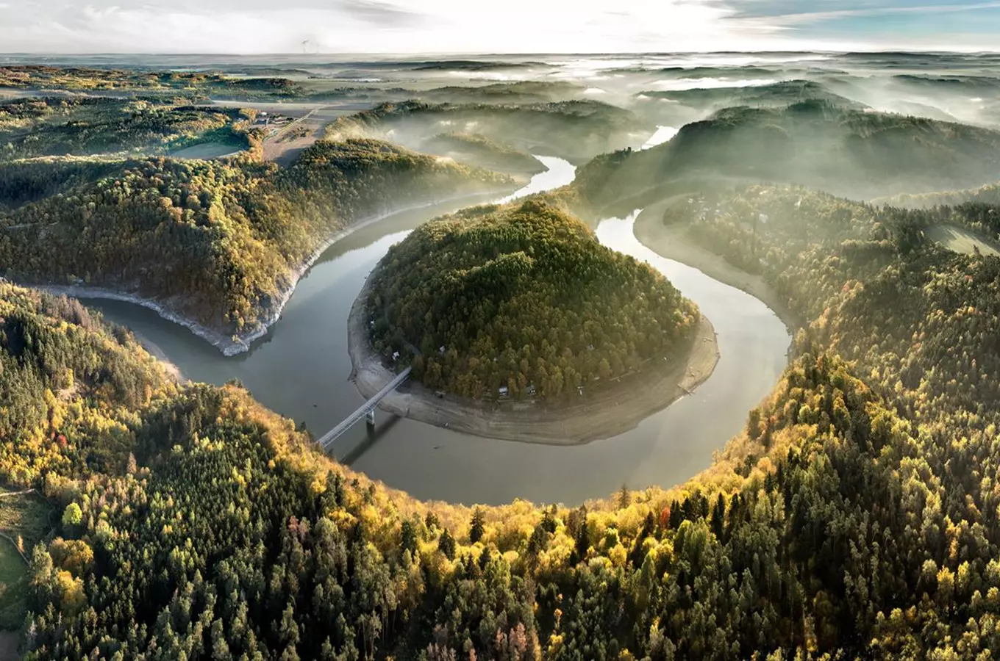
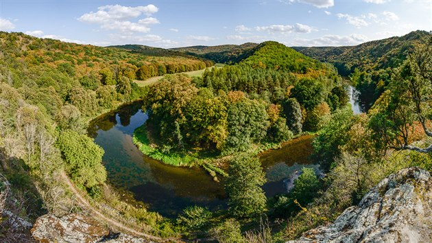
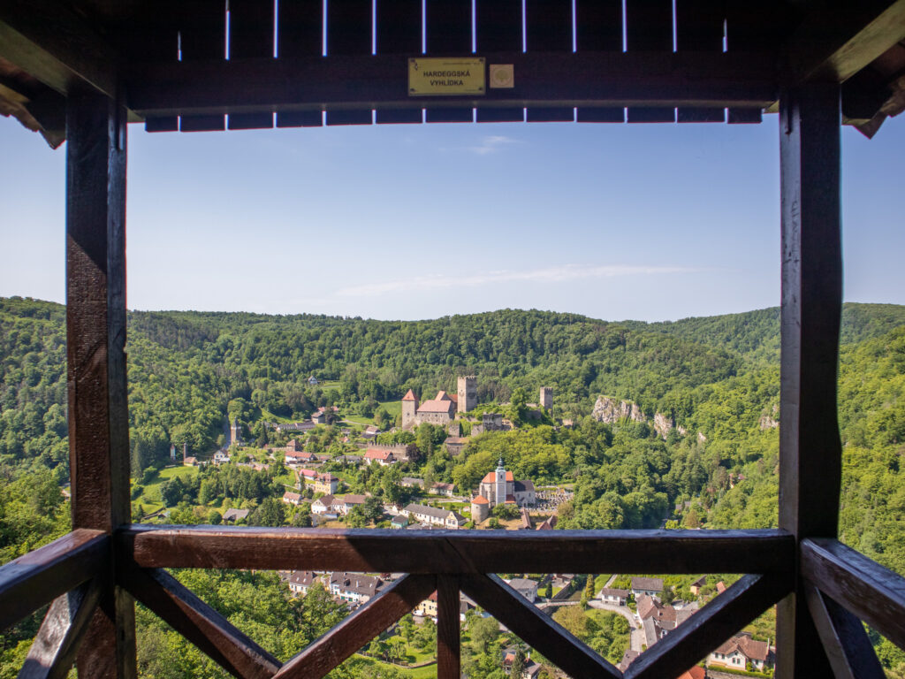

Podyjí National Park
A beautiful national park in South Moravia, known for its deep river valley, peaceful forests and stunning views of the Dyje River.
A beautiful national park in South Moravia, known for its deep river valley, peaceful forests and stunning views of the Dyje River.
Podyjí National Park is located in South Moravia, along the border with Austria. It protects the beautiful valley of the Dyje River and its surrounding forests, meadows and rocky cliffs.
The park is one of the most valuable natural areas in Czechia. Its diverse landscape is home to many species of plants and animals and offers excellent opportunities for hiking and cycling.

The Dyje River flows through a deep and winding valley surrounded by forests and rocky slopes. The river creates one of the most picturesque landscapes in South Moravia.
Visitors can explore the valley using hiking trails and enjoy beautiful views of the river and surrounding countryside.

Hardegg Viewpoint offers one of the most famous views in Podyjí National Park. From here, visitors can see the small Austrian town of Hardegg and its historic castle above the Dyje River.
The viewpoint is surrounded by forests and is a popular stop for hikers exploring the park.

Podyjí offers many places to explore, including scenic viewpoints, forest trails and the historic town of Znojmo. Visitors can discover the natural beauty of the Dyje River Valley and enjoy peaceful walks through the countryside.
The combination of river landscapes, forests and beautiful viewpoints makes Podyjí a unique destination for nature lovers.